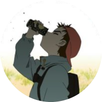
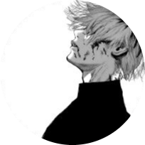
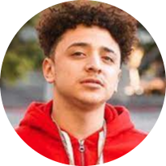
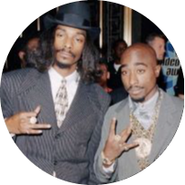

Diego
Diego is a programmer, a founding member of Natural Finds, and part of the Natural Finds development team. Although he has not been programming for that long he has taken a liking towards it. He specializes in web design but also has experience in Python, Java, and JavaScript. In the future, he wants to study Computer Science since that is what he is most interested in. Diego is responsible for creating the back-end of the website including the JavaScript. Diego cares about people's well-being and the environment; aspiring to start a new project such as this one.

Alex
Alex is a founding member of Natural Finds, and part of the development team. He is responsible for debugging, checking erros, as well as working on the html and css of the website. Alex is also responsible of designing the website. Alex started to be interested in programming ever since the end of elementary school but, really took an interest ever since high school started. Alex is also interested in plants and flowers, and has a lot at home, because of this he was interested in making this website.

Nick
Nick is a founding member of Natural Finds, and part of the development team. Nick is responsible for putting together information about our website, researching, and adding final touches to the website. Nick is also interested in programming and web design as well as taking care of his garden.

Matias
Matias is a founding member of Natural Finds, and part of the development team, he helped with forming the front-end of the website. He has taken a liking to computer science and coding, and wants to make a career out of it in the future. Environmental issues has always been a big concern to him and wants to help the community by being involved with this interactive and informative website.